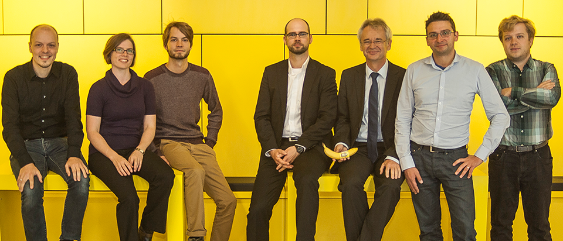
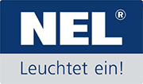
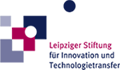
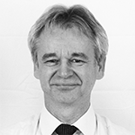
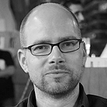
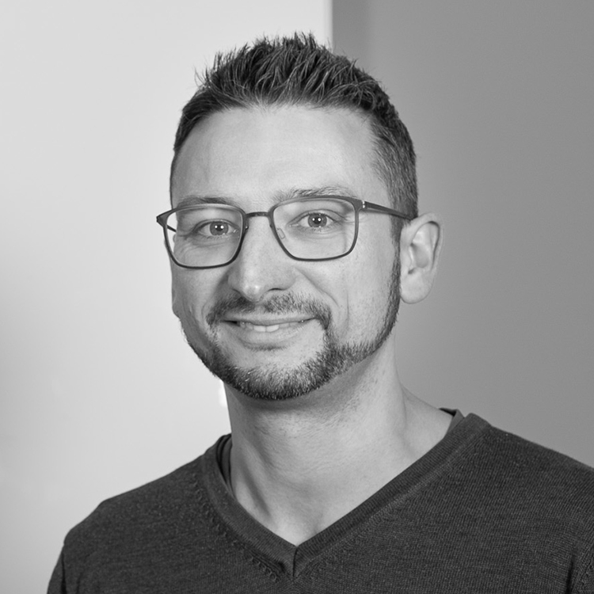
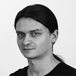
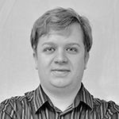
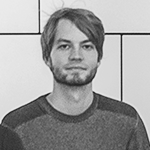

LABORATORY for BIOSIGNAL PROCESSING

Das Laboratory for Biosignal Processing (LaBP) arbeitet schwerpunktmäßig an der Erfassung, Verarbeitung und Analyse von Biosignalen. Im Fokus steht die Entwicklung innovativer, anwendungsnaher Lösungen insbesondere für den medizinischen Bereich. Wir sind zugleich Kooperations- und Ansprechpartner für Unternehmen aller Branchen, die Bedarf an der Entwicklung technischer Lösungen im Gebiet der Embedded-Systems (Hardware/Firmware/Software) und Sensorik haben.Neuigkeiten aus der Arbeitsgruppe sowie Job- und Themenangebote für Praxisforschungs-, Bachelor- und Masterarbeiten finden Sie über unseren Twitter-Feed @LaBP_HTWK.
Forschung & Entwicklung
Wir verfügen über umfangreiches Know-how in den Bereichen- Embedded Systems,
- Elektronik (Schaltungsentwurf und Leiterplattenentwicklung),
- Sensorikkomponenten,
- Softwareentwicklung (C, C++, Qt, MATLAB, usw.) sowie
- Algorithmenentwicklung und Signalverarbeitung (Audio, Video)
In interdisziplinären Forschungsprojekten mit Partnern aus Medizin, Biologie und Neurowissenschaften entwickeln wir innovative, anwendungsnahe Lösungen für vielfältige Problemstellungen in der Biotechnologie und Medizintechnik. Dabei werden sowohl die Hardware-Komponenten als auch die Algorithmen (MATLAB, C/C++) zur Datenauswertung entwickelt. So können wir technische Lösungen bis zur Nullserie realisieren, die entweder zur Durchführung praxisnaher Tests verwendet oder durch Wissens- und Technologietransfer in Unternehmen verwertet werden können.
Forschungsschwerpunkte
Die Untersuchung und Erforschung des Gehirns ist ein wesentlicher Bestandteil der medizinischen Diagnostik, klinischen Forschung sowie verschiedenen neurowissenschaftlichen Disziplinen. Elektroenzephalografie (EEG) und Magnetenzephalografie (MEG) erfassen die bioelektrischen bzw. biomagnetischen Auswirkungen der Gehirnaktivität entweder als elektrische Potenzialänderungen auf der Kopfhaut oder als Änderungen der magnetischen Feldstärke in Kopfnähe.
Auf Grund der hohen Rechenanforderungen sind bislang kaum EEG- und MEG-Geräte mit Online-Analyse-Software ausgestattet. Es existiert derzeit kein System, das komplexe Analysen einschließlich Quellenlokalisation ermöglicht.
Neben der Überwachung der Datenqualität können auch völlig neue Verfahren in der Kognitions- und der sozialen Neuroforschung entwickelt werden.
Ergebnisse
Im Forschungsschwerpunkt wird eine leistungsfähige, technisch stabile Systemlösung zur Online-Quellenrekonstruktion entwickelt. Mit modernsten Parallelverarbeitungstechniken auf Basis von Grafikprozessoren in Verbindung mit effizienten Algorithmen wird so die Analyse der aufgenommenen Daten in Echtzeit realisiert. Die entwickelte Lösung kann in bestehende EEG- und MEG-Systeme integriert werden.
NA-Online Toolbox: https://github.com/labp/na-online_ow-toolbox
Auf Grund der hohen Rechenanforderungen sind bislang kaum EEG- und MEG-Geräte mit Online-Analyse-Software ausgestattet. Es existiert derzeit kein System, das komplexe Analysen einschließlich Quellenlokalisation ermöglicht.
Neben der Überwachung der Datenqualität können auch völlig neue Verfahren in der Kognitions- und der sozialen Neuroforschung entwickelt werden.
Ergebnisse
Im Forschungsschwerpunkt wird eine leistungsfähige, technisch stabile Systemlösung zur Online-Quellenrekonstruktion entwickelt. Mit modernsten Parallelverarbeitungstechniken auf Basis von Grafikprozessoren in Verbindung mit effizienten Algorithmen wird so die Analyse der aufgenommenen Daten in Echtzeit realisiert. Die entwickelte Lösung kann in bestehende EEG- und MEG-Systeme integriert werden.
NA-Online Toolbox: https://github.com/labp/na-online_ow-toolbox
Peripherphysiologische Signale, also alle physiologischen Signale, die nicht direkt vom Gehirn erzeugt werden, geben in erster Linie Auskunft über den funktionellen Zustand des entsprechenden Organs bzw. Gewebes. Die Signale lassen sich als physikalische Größen an der Hautoberfläche direkt oder indirekt messen. Zu ihnen gehören unter anderem die elektrische Herzaktivität (EKG), die Atemfrequenz und der Hautwiderstand (EDA).
Die Erfassung dieser Signale spielt in der medizinischen Diagnostik seit vielen Jahren eine bedeutende Rolle. Zur Erforschung neuartiger Behandlungsmöglichkeiten von Krankheiten benötigen Mediziner und Psychologen jedoch spezielle Systeme, die peripherphysiologische Signale unter bisher nicht relevanten Modalitäten aufnehmen und auswerten können. Die Wissenschaftler des LaBP forschen bereits seit einigen Jahren an der Ableitung und Verarbeitung von Biosignalen, von den mathematischen Grundlagen und Algorithmen bis zur Hardware, um geeignete Lösungen für diese neuen Anforderungen zu entwickeln.
Neueste Erkenntnisse zeigen, dass eine zunehmende Analyse und Überwachung dieser Signale im Rahmen von Diagnosestellungen sowie Therapien (Biofeedbacktherapien, Einstellung und Überwachung der Medikation) langfristig zu besseren Therapieerfolgen führen. Bisher werden entsprechende Verfahren wegen des hohen apparativen Aufwandes in der klinischen Praxis jedoch nur selten eingesetzt.
Ergebnisse
Im Rahmen des Forschungsschwerpunktes werden praxistaugliche Messsysteme entwickelt, die den derzeit hohen apparativen Aufwand neuartiger Diagnose- und Therapieverfahren minimieren. Die peripherphysiologischen Signale werden simultan, in hoher Signalqualität und in Echtzeit erfasst.
Zur Auswertung der Daten werden geeignete Methoden und Algorithmen entwickelt. Die Messsysteme ermöglichen sowohl das Monitoring einzelner als auch die parallele Analyse mehrerer Patienten. Die modulare Zusammensetzung gewährleistet verschiedene Kombinationsmöglichkeiten für unterschiedliche Fragestellungen. Darüber hinaus steht das System als erweiterbare Plattform für weitere Einsatzgebiete zur Verfügung.
Die Erfassung dieser Signale spielt in der medizinischen Diagnostik seit vielen Jahren eine bedeutende Rolle. Zur Erforschung neuartiger Behandlungsmöglichkeiten von Krankheiten benötigen Mediziner und Psychologen jedoch spezielle Systeme, die peripherphysiologische Signale unter bisher nicht relevanten Modalitäten aufnehmen und auswerten können. Die Wissenschaftler des LaBP forschen bereits seit einigen Jahren an der Ableitung und Verarbeitung von Biosignalen, von den mathematischen Grundlagen und Algorithmen bis zur Hardware, um geeignete Lösungen für diese neuen Anforderungen zu entwickeln.
Neueste Erkenntnisse zeigen, dass eine zunehmende Analyse und Überwachung dieser Signale im Rahmen von Diagnosestellungen sowie Therapien (Biofeedbacktherapien, Einstellung und Überwachung der Medikation) langfristig zu besseren Therapieerfolgen führen. Bisher werden entsprechende Verfahren wegen des hohen apparativen Aufwandes in der klinischen Praxis jedoch nur selten eingesetzt.
Ergebnisse
Im Rahmen des Forschungsschwerpunktes werden praxistaugliche Messsysteme entwickelt, die den derzeit hohen apparativen Aufwand neuartiger Diagnose- und Therapieverfahren minimieren. Die peripherphysiologischen Signale werden simultan, in hoher Signalqualität und in Echtzeit erfasst.
Zur Auswertung der Daten werden geeignete Methoden und Algorithmen entwickelt. Die Messsysteme ermöglichen sowohl das Monitoring einzelner als auch die parallele Analyse mehrerer Patienten. Die modulare Zusammensetzung gewährleistet verschiedene Kombinationsmöglichkeiten für unterschiedliche Fragestellungen. Darüber hinaus steht das System als erweiterbare Plattform für weitere Einsatzgebiete zur Verfügung.
Durch die Integration von Elektronik, Sensorik, Kommunikationsschnittstellen und vor allem von Analyseverfahren können inzwischen jederzeit und an jedem Ort unterschiedlichste Informationen erfasst, analysiert und weitergeleitet werden. Embedded Systems bilden den Grundbaustein für das ‚Internet der Dinge‘. Die Breitentechnologie Embedded Systems ist daher ein Treiber von Innovationen in verschiedensten Anwendungsbereichen.
Sowohl für den Bereich der Medizin und biomedizinischen Diagnostik als auch für andere Anwendungsbereiche konnte die Arbeitsgruppe bereits marktfähige Lösungen inklusive Hardware und Algorithmen entwickeln, darunter ein Temperaturcontroller für den Mikrofluidikbereich, sensorunterstützte Evaluation von Reinraumsäuberung und ein markerloses Bewegungserfassungssystem für ein Ergonomie-Feedback in Echtzeit.
Ihre Expertise in den Gebieten Internet of Things (IoT) und eingebettete Systeme befähigt die Arbeitsgruppe auch in der Beratung von Unternehmen und im Aufbau eines arbeitsfähigen Netzwerks aus potenziellen Anwendern, Produzenten und Entscheidern. Den Auftakt dazu stellte das zweitägige Innovationsforum "Embedded Innovation" im September 2015 dar, woraus weitere Veranstaltungen und ein Netzwerk auf Initiative der Arbeitsgruppe hervorgehen.
Sowohl für den Bereich der Medizin und biomedizinischen Diagnostik als auch für andere Anwendungsbereiche konnte die Arbeitsgruppe bereits marktfähige Lösungen inklusive Hardware und Algorithmen entwickeln, darunter ein Temperaturcontroller für den Mikrofluidikbereich, sensorunterstützte Evaluation von Reinraumsäuberung und ein markerloses Bewegungserfassungssystem für ein Ergonomie-Feedback in Echtzeit.
Ihre Expertise in den Gebieten Internet of Things (IoT) und eingebettete Systeme befähigt die Arbeitsgruppe auch in der Beratung von Unternehmen und im Aufbau eines arbeitsfähigen Netzwerks aus potenziellen Anwendern, Produzenten und Entscheidern. Den Auftakt dazu stellte das zweitägige Innovationsforum "Embedded Innovation" im September 2015 dar, woraus weitere Veranstaltungen und ein Netzwerk auf Initiative der Arbeitsgruppe hervorgehen.
Kooperationspartner

Technologietransfer
Forschungskooperationen zwischen Wissenschaft und Wirtschaft bilden eine entscheidende Grundlage für Innovationen und damit für die Wettbewerbsfähigkeit der Region.Mit unserem Anspruch, anwendungsnahe und praxisrelevante Forschungsthemen zu bearbeiten, sind wir idealer Kooperationspartner für kleine, mittelständische und große Unternehmen.
Wir unterstützen Sie durch den Transfer von technologischem Know-how, externe Forschungs- und Entwicklungsleistungen, Projektrealisierung sowie Beratung und Mitwirken bei der Beantragung von Fördermitteln.
Sie haben Interesse an einer Zusammenarbeit? Vereinbaren Sie bitte einen unverbindlichen Beratungstermin mit uns.

Der Technologietransfer wird gefördert durch die
Leipziger Stiftung für Innovation und Technologietransfer (www.leipziger-stiftung.de).
Leipziger Stiftung für Innovation und Technologietransfer (www.leipziger-stiftung.de).
Studenten
Ihr seid auf der Suche nach einem Thema für eure Bachelor- oder Masterarbeit? Ihr möchtet uns durch praktische Arbeit im Rahmen eurer Abschlussarbeit unterstützen? Wir bieten spannende Themen aus den Bereichen digitale Bildverarbeitung, Softwareentwicklung (C/C++/Qt) sowie Schaltungs- und Algorithmenentwicklung.Unabhängig von den hier ausgeschriebenen Themen vergeben wir ständig kleine und größere Projektarbeiten, mit denen ihr euer Wissen während der Vorlesungen, der Semesterferien oder eines Praktikums erweitern könnt. Nehmt bitte Kontakt mit uns auf.
Aktuelle Themenangebote
- Sensorik für Prozessanalyse bei Dekontaminationsvorgängen
- Ermittlung der Lage des Kopfes von Neugeborenen aus Videodaten
- Verfahren zur Reduzierung von Bewegungsartefakten rPPG-Signalen
- Robuste Extraktion von rPPG-Signalen unter Verwendung mehrerer ROIs
- Entwicklung eines Strom-Messsystems für batteriebetriebene Geräte
- Verfahren zur Verschlüsselung und Authentifizierung von eingebetteten Sensorknoten
- Optimierung von Sensorpositionen zur kompakten Aufnahme qualitativ hochwertiger Biosignale
- Kamera-basierte Messung von Laufzeitunterschieden zwischen rPPG-Signalen in unterschiedlichen Gesichtsregionen
- Gesichtsdetektion von Neugeborenen unter Verwendung neuronaler Netze
Team

Prof. Dr.-Ing. Matthias Sturm
ArbeitsgruppenleiterTel. +49 341 3076 3116
matthias.sturm@htwk-leipzig.de



Patrick Frenzel, M.Sc.
Wissenschaftlicher MitarbeiterTel. +49 341 3076 3130

Fabian Schrumpf, M.Sc.
Wissenschaftlicher MitarbeiterTel. +49 341 3076 3152

Christoph Mönch, B.Eng.
Wissenschaftlicher MitarbeiterTel. +49 341 3076 3133
Nehmen Sie Kontakt mit uns auf
Hochschule für Technik, Wirtschaft und Kultur (HTWK) Leipzig,Forschungszentrum Life Science & Engineering
Besucher:
Eilenburger Straße 13
04317 Leipzig
Eilenburger Straße 13
04317 Leipzig
Briefe und Pakete:
HTWK Leipzig
Laboratory for Biosignal Processing
Postfach 30 11 66
04251 Leipzig
HTWK Leipzig
Laboratory for Biosignal Processing
Postfach 30 11 66
04251 Leipzig
Ansprechpartner:
Dr.-Ing. Gerold Bausch
Projektentwicklung & Technologietransfer
E-Mail: gerold.bausch@htwk-leipzig.de
Tel. +49 341 3076 3103
Dr.-Ing. Gerold Bausch
Projektentwicklung & Technologietransfer
E-Mail: gerold.bausch@htwk-leipzig.de
Tel. +49 341 3076 3103
Dipl.-Ing. (FH) Mirco Fuchs
Wissenschaftliche Leitung
E-Mail: mirco.fuchs@htwk-leipzig.de
Tel. +49 341 3076 3104